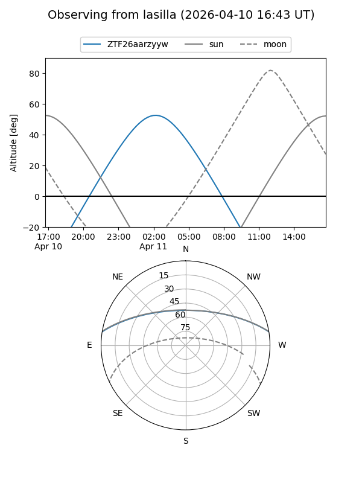
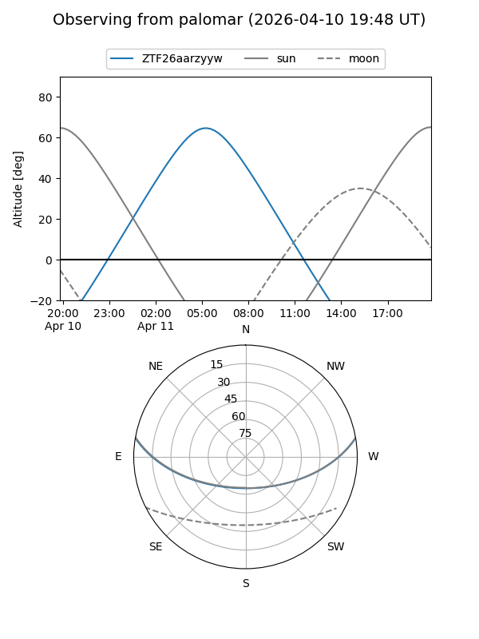

ZTF26aarzyyw
Target ZTF26aarzyyw at 2026-04-11 07:12
Aliases and brokers:
FINK: link
Lasair: link
ALeRCE: link
alt names
ZTF26aarzyyw (ztf,fink_ztf)
Coordinates:
equatorial (ra, dec) = 160.8768,+8.20473
equatorial (HMS+DMS) = 10:43:30.43,+08:12:17.05
galactic (l, b) = (238.9416,+54.31559)
Flags:
Photometry:
last ztfg=19.63
2 ztfg detections
Lightcurve
Visibility


Additional plots